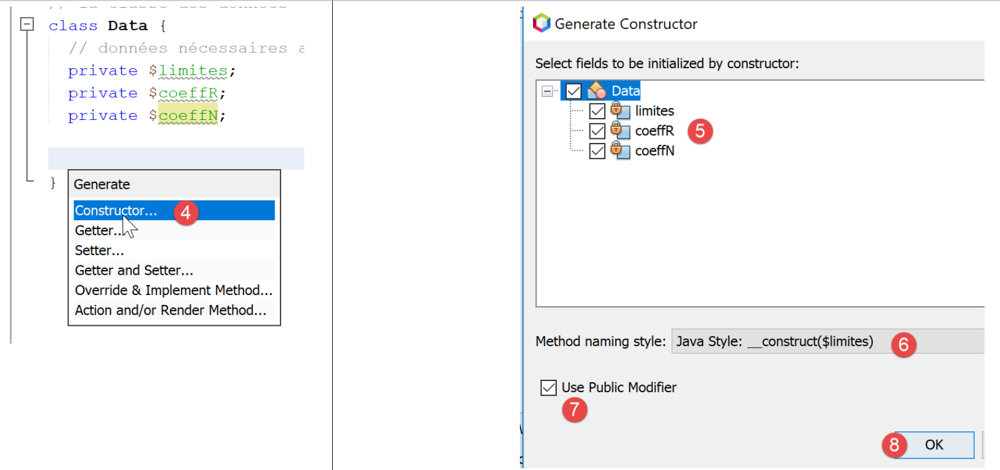
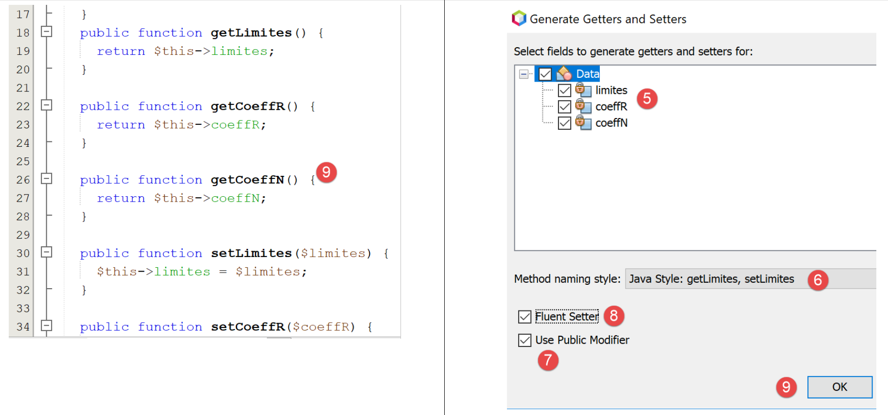

8. Anwendungsübung – Version 3
Wir greifen die bereits zuvor behandelte Übung (Abschnitte 4.3 und 4.4) wieder auf, um sie mit dem Code PHP unter Verwendung einer Klasse zu lösen.
8.1. Die Skript-Struktur

8.2. Die Ausnahme [ExceptionImpots]
In Version 03 löst ein Konstruktor oder eine Klassenmethode, wenn ein Fehler auftritt, eine Ausnahme vom Typ [ExceptionImpots] aus, die wie folgt aussieht:
Anmerkungen
- Zeile 4: Die Klasse [ExceptionImpots] befindet sich im Namensraum [Application];
- Zeile 6: Die Klasse [ExceptionImpots] erweitert die in PHP vordefinierte Klasse [RuntimeException];
- Zeile 8: Der Konstruktor erwartet zwei Parameter:
- $message: ist die mit der Ausnahme verbundene Fehlermeldung;
- $code: ist der der Ausnahme zugeordnete Fehlercode. Ist dieser nicht vorhanden, wird der Code 0 verwendet;
8.3. Die Klasse [TaxAdminData]
In Version 02 wurden die Daten der Steuerbehörde zusammengefasst:
- zunächst in einer Datei jSON;
- anschließend aus dieser Datei jSON in ein assoziatives Array;
In Version 03 befinden sich die Daten der Steuerbehörde weiterhin in der Datei [taxadmindata.json], jedoch mit anderen Attributnamen:
{
"limites": [
9964,
27519,
73779,
156244,
0
],
"coeffR": [
0,
0.14,
0.3,
0.41,
0.45
],
"coeffN": [
0,
1394.96,
5798,
13913.69,
20163.45
],
"plafondQfDemiPart": 1551,
"plafondRevenusCelibatairePourReduction": 21037,
"plafondRevenusCouplePourReduction": 42074,
"valeurReducDemiPart": 3797,
"plafondDecoteCelibataire": 1196,
"plafondDecoteCouple": 1970,
"plafondImpotCouplePourDecote": 2627,
"plafondImpotCelibatairePourDecote": 1595,
"abattementDixPourcentMax": 12502,
"abattementDixPourcentMin": 437
}
In Version 02 diente diese Datei dazu, ein assoziatives Array zu initialisieren. In Version 03 initialisiert die Datei die folgende Klasse [TaxAdminData]:
<?php
namespace Application;
class TaxAdminData {
// Steuerklassen
private $limites;
private $coeffR;
private $coeffN;
// Konstanten für die Steuerberechnung
private $plafondQfDemiPart;
private $plafondRevenusCelibatairePourReduction;
private $plafondRevenusCouplePourReduction;
private $valeurReducDemiPart;
private $plafondDecoteCelibataire;
private $plafondDecoteCouple;
private $plafondImpotCouplePourDecote;
private $plafondImpotCelibatairePourDecote;
private $abattementDixPourcentMax;
private $abattementDixPourcentMin;
// Initialisierung
public function setFromJsonFile(string $taxAdminDataFilename): TaxAdminData {
// Der Inhalt der Steuerdatendatei wird abgerufen
$fileContents = \file_get_contents($taxAdminDataFilename);
$erreur = FALSE;
// Fehler?
if (!$fileContents) {
// Fehler protokollieren
$erreur = TRUE;
$message = "Le fichier des données [$taxAdminDataFilename] n'existe pas";
}
if (!$erreur) {
// Abruf des Codes jSON aus der Konfigurationsdatei in ein assoziatives Array
$arrayTaxAdminData = \json_decode($fileContents, true);
// Fehler?
if ($arrayTaxAdminData === FALSE) {
// Der Fehler wird vermerkt
$erreur = TRUE;
$message = "Le fichier de données jSON [$taxAdminDataFilename] n'a pu être exploité correctement";
}
}
// Fehler?
if ($erreur) {
// Es wird eine Ausnahme ausgelöst
throw new ExceptionImpots($message);
}
// Initialisierung der Klassenattribute
foreach ($arrayTaxAdminData as $key => $value) {
$this->$key = $value;
}
// Es wird überprüft, ob alle Schlüssel initialisiert wurden
$arrayOfAttributes = \get_object_vars($this);
foreach ($arrayOfAttributes as $key => $value) {
if (!isset($this->$key)) {
throw new ExceptionImpots("L'attribut [$key] de [TaxAdminData] n'a pas été initialisé");
}
}
// Es wird überprüft, ob nur reelle Werte vorhanden sind
foreach ($this as $key => $value) {
// $value muss eine reelle Zahl >= 0 oder ein Array aus reellen Zahlen >= 0 sein
$result = $this->check($value);
// Fehler?
if ($result->erreur) {
// Es wird eine Ausnahme ausgelöst
throw new ExceptionImpots("La valeur de l'attribut [$key] est invalide");
} else {
// Der Wert wird notiert
$this->$key = $result->value;
}
}
// Das Objekt wird zurückgegeben
return $this;
}
private function check($value): \stdClass {
…
return $result;
}
// toString
public function __toString() {
// JSON-String des Objekts
return \json_encode(\get_object_vars($this), JSON_UNESCAPED_UNICODE);
}
// Getter und Setter
public function getLimites() {
return $this->limites;
}
public function getCoeffR() {
return $this->coeffR;
}
…
}
public function setLimites($limites) {
$this->limites = $limites;
return $this;
}
public function setCoeffR($coeffR) {
$this->coeffR = $coeffR;
return $this;
}
…
}
Kommentare
- Zeilen 6–20: Die Attribute, die die gleichnamigen Attribute der Dateien jSON und [taxadmindata.json] aufnehmen werden. Dies ist ein wichtiger Punkt: Die Attribute der Klasse [TaxAdminData] sind identisch mit denen der Dateien jSON und [taxadmindata.json]. Diese Besonderheit erleichtert das Schreiben des Codes erheblich;
- die Klasse [TaxAdminData] hat keinen Konstruktor. In PHP ist es nicht möglich, mehrere Konstruktoren zu haben. Die Festlegung eines Konstruktors verhindert daher die Initialisierung des Objekts auf andere Weise. Im Folgenden werden unsere Klassen keinen Konstruktor haben, sondern mehrere Methoden vom Typ [setFromQqChose], die eine Initialisierung auf verschiedene Arten ermöglichen. Die Erstellung eines Objekts vom Typ [TaxAdminData] erfolgt dann mit dem Ausdruck:
- Zeile 23: Die Methode [setFromJsonFile] initialisiert die Attribute der Klasse mit den gleichnamigen Attributen in der Datei [$jsonFilename];
- Zeilen 24–42: Die Datei jSON wird verwendet, um das assoziative Array [$arrayTaxAdminData] zu erstellen. Diesen Code haben wir bereits im Skript [main.php] der Version 02 gesehen;
- Zeilen 44–47: Wenn bei der Verarbeitung der Datei „jSON“ ein Fehler aufgetreten ist, wird eine Ausnahme ausgelöst. Diese wird an das Hauptskript „[main.php]“ weitergeleitet;
- Zeilen 48–51: Die Attribute der Klasse werden initialisiert. Dabei wird die Tatsache genutzt, dass das assoziative Array [$arrayTaxAdminData] und die Klasse [TaxAdminData] Attribute mit denselben Namen haben wie die Werte aus der Datei jSON;
- Zeilen 53–57: Es wird überprüft, ob alle Attribute der Klasse [TaxAdminData] initialisiert wurden;
- Zeile 53: Der Ausdruck [get_object_vars($this)] liefert ein assoziatives Array, dessen Attribute denen des Objekts [$this] entsprechen, also den Attributen der Klasse [TaxAdminData]. Hierbei ist zu beachten, dass durch den Initialisierungsvorgang in den Zeilen 48–51 möglicherweise Attribute zum Objekt [$this] hinzugefügt wurden. Wenn man also schreibt:
dann wird das Attribut [x] dem Objekt [$this] hinzugefügt, auch wenn dieses Attribut in der Klasse [TaxAdminData] nicht deklariert wurde. Sicher ist, dass die Attribute in den Zeilen 6–20 zwar Teil des Objekts [$this] sind, aber möglicherweise nicht initialisiert wurden. Dieser Fehler lässt sich leicht unterlaufen: Es reicht schon, sich bei einem Attributnamen in der Datei [taxadmindata.json] zu vertun;
- Zeilen 54–57: Alle Attribute von [$this] werden durchlaufen, und wenn eines davon nicht initialisiert wurde, wird eine Ausnahme ausgelöst;
- Ein Attribut kann mit einem falschen Wert initialisiert werden. In PHP ist es nicht möglich, den Attributen einen Typ zuzuweisen. Daher führt der Befehl:
ist möglich, obwohl das Attribut [$plafondQfDemiPart] ein reeller Wert sein müsste;
- Zeilen 59–71: Es wird überprüft, ob jedes der Attribute der Klasse einen positiven reellen oder den Wert Null aufweist. Diese Aufgabe übernimmt die Funktion [check] in Zeile 76. Ihr Parameter [$value] ist entweder ein einzelner Wert oder ein Array von Werten;
- Zeile 62: Die Funktion [check] gibt ein Objekt vom Typ [\stdClass] mit zwei Attributen zurück:
- [erreur]: bei einem Fehler den Wert von TRUE, andernfalls den Wert von FALSE;
- [value]: der tatsächliche numerische Wert, der dem als Parameter übergebenen [$value] entspricht, Zeile 62;
- Zeile 64: Es wird geprüft, ob die Überprüfung erfolgreich war oder nicht;
- Zeile 66: Wenn ein Attribut keine positive reelle Zahl oder Null ist, wird eine Ausnahme ausgelöst;
- Zeile 69: Andernfalls wird sein numerischer Wert notiert;
- Zeile 73: Das Objekt [$this] wird als Ergebnis zurückgegeben;
Die Funktion [check] lautet wie folgt:
private function check($value): \stdClass {
// $value ist entweder ein Array von Elementen oder ein einzelnes Element
// Es wird ein Array erstellt
if (!\is_array($value)) {
$tableau = [$value];
} else {
$tableau = $value;
}
// Das Array mit Elementen unbekannten Typs wird in ein Array von reellen Zahlen umgewandelt
$newTableau = [];
$result = new \stdClass();
// Die Elemente des Arrays müssen positive Dezimalzahlen oder Null sein
$modèle = '/^\s*([+]?)\s*(\d+\.\d*|\.\d+|\d+)\s*$/';
for ($i = 0; $i < count($tableau); $i ++) {
if (preg_match($modèle, $tableau[$i])) {
// man setzt den Float in newTableau
$newTableau[] = (float) $tableau[$i];
} else {
// Der Fehler wird vermerkt
$result->erreur = TRUE;
// das Programm wird beendet
return $result;
}
}
// Das Ergebnis wird ausgegeben
$result->erreur = FALSE;
if (!\is_array($value)) {
// ein einzelner Wert
$result->value = $newTableau[0];
} else {
// eine Liste von Werten
$result->value = $newTableau;
}
return $result;
}
Kommentare
- Zeile 1: Der Parameter [$value] ist entweder ein Array oder ein einzelnes Element. Außerdem ist sein Typ nicht bekannt. Der Wert stammt aus der Datei [taxadmindata.json]. Je nach den in dieser Datei eingetragenen Werten können die gelesenen Werte Ganzzahlen, reelle Zahlen, Zeichenketten oder Boolesche Werte sein. Zum Beispiel:
"plafondQfDemiPart": 1551,
"plafondQfDemiPart": 1551.78,
"plafondQfDemiPart": "1551",
"plafondQfDemiPart": "xx",
In Fall 1 ist der Wert vom Typ [entier], in Fall 2 vom Typ [réel], im Fall 3 vom Typ [string], der in eine Zahl konvertiert werden kann, im Fall 4 vom Typ [string], der nicht in eine Zahl konvertiert werden kann;
- Zeilen 4–8: Es wird ein Array aus dem in Zeile 1 als Parameter übergebenen Wert [$value] erstellt;
- Zeile 10: Das Array wird mit reellen Zahlen gefüllt;
- Zeile 11: Das Ergebnis ist ein Objekt vom Typ [\stdClass];
- Zeile 13: Relationaler Ausdruck für eine positive reelle Zahl oder Null;
- Zeilen 14–24: Es wird überprüft, ob alle Elemente des Arrays [$tableau] positive reelle Zahlen oder Null sind, und das Array [$newTableau] wird mit diesen Elementen gefüllt, die in den Typ [float] umgewandelt wurden (Zeile 17);
- Zeilen 18–23: Sobald ein Element erkannt wird, das keine positive reelle Zahl oder Null ist, wird der Fehler im Ergebnis vermerkt und dieses zurückgegeben;
- Zeilen 25–34: Fall, in dem alle Elemente der Tabelle [$tableau] als korrekt deklariert wurden;
- Zeile 32: Der zurückgegebene Wert [$result→value] ist entweder ein Array von reellen Zahlen [float] oder eine einzelne reelle Zahl;
Die Funktion [__toString] in den Zeilen 82–85 gibt die Zeichenkette jSON mit den Attributen und Werten des Objekts [$this] zurück.
Zeilen 87–110: die Getter und Setter der Klasse;
Hinweis: Es kann manchmal etwas mühsam sein, alle Getter und Setter einer Klasse schreiben zu müssen, insbesondere wenn es viele Attribute gibt. NetBeans kann diese sowie den Konstruktor automatisch generieren. Dazu müssen Sie lediglich die Attribute [1] wie folgt angeben:

- in [2] ein, klicken Sie mit der rechten Maustaste an die Stelle, an der Sie Code einfügen möchten, und wählen Sie dann die Option [Insert Code];

- in [4] geben Sie an, dass Sie den Konstruktor generieren möchten;
- bei [5] alle Attribute ankreuzen: Das bedeutet, dass der Konstruktor für jedes Attribut einen Parameter haben soll;
- in [6]: Wählen Sie den Stil der Java-Konstruktoren;
- Geben Sie in [7] an, dass Sie das Schlüsselwort [public] explizit vor dem Konstruktor wünschen;
- Bestätigen Sie in [8];

- In [9] hat NetBeans den Konstruktor generiert. Allerdings konnte es die Typen der Parameter nicht angeben, da es diese nicht kennt. Fügen Sie diese selbst hinzu: [10];
Um die Getter und Setter zu generieren, wiederholen Sie die Schritte 2–4 und wählen Sie in Schritt 4 „[Getter and Setter]“ aus:

- Geben Sie bei [5] an, dass Sie Getter und Setter für jedes der Attribute wünschen;
- Geben Sie in „[6]“ an, dass Sie die Getter und Setter im von Java verwendeten Stil wünschen: „setAttribut“, „getAttribut“;
- Geben Sie in [7] an, dass diese Getter und Setter öffentlich sein sollen;
- Bestätigen Sie in [8];

- in [9] die von NetBeans generierten Getter und Setter;
Löschen Sie diese Getter und Setter und wiederholen Sie die Schritte 2–7.
- In [8] aktivieren Sie die Option [Fluent Setter], die wir zuvor nicht aktiviert hatten;
Das Ergebnis sieht wie folgt aus:

Jeder Setter endet mit einer Operation [return $this]. Dadurch lassen sich die Attribute wie folgt initialisieren:
Tatsächlich ist der Wert von [$data→setLimites($limites)] (Zeile 32 des Codes) [$this], also hier [$data]. Man kann also die Methode [setCoeffR($coeffR)] dieses Objekts aufrufen und so weiter, da diese Methode ihrerseits wiederum [$this] (Zeile 37 des Codes) zurückgibt. Diese Schreibweise der Methoden einer Klasse, bei der Methoden, die eigentlich nichts zurückgeben sollten, das Objekt [$this] zurückgeben, wird als „Fluent-Style“ bezeichnet. Sie erleichtert die Verwendung dieser Methoden.
8.4. Die Schnittstelle [InterfaceImpots]
Wir definieren nun die folgende Schnittstelle [InterfaceImpots]: [InterfaceImpots.php]:
<?php
// Namensraum
namespace Application;
interface InterfaceImpots {
// Daten der Steuerklassen abrufen, die die Steuerberechnung ermöglichen
// kann die Ausnahme ExceptionImpots auslösen
public function getTaxAdminData(): TaxAdminData;
// Die Schnittstelle kann eine Steuer berechnen
public function calculerImpot(string $marié, int $enfants, int $salaire): array;
// Die Schnittstelle kann Daten aus Textdateien auswerten
// $usersFilename: Datei mit Benutzerdaten in Form von Familienstand, Anzahl der Kinder, Jahresgehalt
// $resultsFilename: Ergebnisdatei in Form von Familienstand, Anzahl der Kinder, Jahresgehalt, Steuerbetrag
// $errorsFilename: Datei mit den aufgetretenen Fehlern
// kann die Ausnahme ExceptionImpots auslösen
public function executeBatchImpots(string $usersFileName, string $resultsFileName, string $errorsFileName): void;
}
Anmerkungen
- Zeile 4: Die Schnittstelle befindet sich im Namensraum [Application];
- Zeile 6: Die Schnittstelle zur Berechnung der Steuern;
- Zeile 10: Die Methode [getTaxAdminData] dient dazu, die Daten der Steuerbehörde in ein Objekt vom Typ [TaxAdminData] zu laden, das wir gerade vorgestellt haben. Da sich diese Daten in einer Datei, einer Datenbank oder sogar im Netzwerk befinden können, kann es vorkommen, dass die Methode [getTaxAdminData] beim Abrufen der Daten fehlschlägt. In diesem Fall löst sie eine Ausnahme vom Typ [ExceptionImpots] aus. Dies ist die Standardmethode in der objektorientierten Programmierung, um einen Fehler zu melden, der in einer Methode oder einem Konstruktor aufgetreten ist;
- Zeile 13: Mit der Methode [calculerImpot] lässt sich die Steuer eines Nutzers berechnen;
- Zeile 20: Mit der Methode [executeBatchImpots] lässt sich die Steuer für mehrere Steuerzahler berechnen;
- [$usersFileName] ist der Name der Textdatei, die die Daten der Steuerzahler enthält;
- [$resultsFileName] ist der Name der Textdatei, die die Steuerbeträge für diese Steuerzahler enthält;
- [$errorsFileName] ist der Name der Textdatei, die die bei der Verarbeitung dieser Dateien aufgetretenen Fehler enthält;
Der Inhalt der Textdatei [$usersFileName] könnte wie folgt lauten:
oui,2,55555
oui,2,50000
oui,3,50000
non,2,100000
non,3x,100000
oui,3,100000
oui,5,100000x
non,0,100000
oui,2,30000
non,0,200000
oui,3,200000
Es ist zu beachten, dass die Zeilen 5 und 7 fehlerhafte Einträge enthalten.
Der Inhalt der Textdatei [$resultsFileName] lautet dann wie folgt:
und der der Textdatei [$errorsFileName] wie folgt:
8.5. Die Klasse [Utilitaires]
Außerdem definieren wir eine Klasse [Utilitaires] in einer Datei [Utilitaires.php]:
<?php
// Namensraum
namespace Application;
// eine Klasse mit Hilfsfunktionen
abstract class Utilitaires {
public static function cutNewLinechar(string $ligne): string {
// Die Zeilenende-Markierung von $ligne wird entfernt, falls vorhanden
$longueur = strlen($ligne); // Zeilenlänge
while (substr($ligne, $longueur - 1, 1) == "\n" or substr($ligne, $longueur - 1, 1) == "\r") {
$ligne = substr($ligne, 0, $longueur - 1);
$longueur--;
}
// Ende – die Zeile wird zurückgegeben
return($ligne);
}
}
Anmerkungen
- Zeile 4: Die Klasse [Utilitaires] wird ebenfalls im Namensraum [Exemples] abgelegt;
- Zeile 9: Die Methode [cutNewLinechar] entfernt das eventuelle Zeilenendezeichen aus dem Text, der ihr als Parameter übergeben wurde. Sie gibt die so gebildete neue Zeile zurück. Es ist zu beachten, dass es sich um eine statische Methode handelt, d. h., sie wird in der Form [Utilitaires::cutNewLineChar] aufgerufen;
8.6. Die abstrakte Klasse [AbstractBaseImpots]
Die Schnittstelle [InterfaceImpots] wird durch die folgende abstrakte Klasse [AbstractBaseImpots] implementiert: [AbstractBaseImpots.php]:
<?php
// Namensraum
namespace Application;
// Definition einer abstrakten Klasse AbstractBaseImpots
abstract class AbstractBaseImpots implements InterfaceImpots {
// Daten der Steuerbehörde
private $taxAdminData = NULL;
// für die Steuerberechnung erforderliche Daten
abstract function getTaxAdminData(): TaxAdminData;
// Steuerberechnung
// --------------------------------------------------------------------------
public function calculerImpot(string $marié, int $enfants, int $salaire): array {
// $marié: ja, nein
// $enfants: Anzahl der Kinder
// $salaire: Jahresgehalt
// $this->taxAdminData: Daten der Steuerbehörde
//
// Es wird überprüft, ob die Daten der Steuerbehörde vorliegen
if ($this->taxAdminData === NULL) {
$this->taxAdminData = $this->getTaxAdminData();
}
// Steuerberechnung mit Kindern
$result1 = $this->calculerImpot2($marié, $enfants, $salaire);
$impot1 = $result1["impôt"];
// Berechnung der Steuer ohne Kinder
if ($enfants != 0) {
$result2 = $this->calculerImpot2($marié, 0, $salaire);
$impot2 = $result2["impôt"];
// Anwendung der Obergrenze für den Familienquotienten
$plafonDemiPart = $this->taxAdminData->getPlafondQfDemiPart();
if ($enfants < 3) {
// $PLAFOND_QF_DEMI_PART Euro für die ersten beiden Kinder
$impot2 = $impot2 - $enfants * $plafonDemiPart;
} else {
// $PLAFOND_QF_DEMI_PART Euro für die ersten beiden Kinder, das Doppelte für die folgenden
$impot2 = $impot2 - 2 * $plafonDemiPart - ($enfants - 2) * 2 * $plafonDemiPart;
}
} else {
$impot2 = $impot1;
$result2 = $result1;
}
// es gilt der höhere Steuersatz
if ($impot1 > $impot2) {
$impot = $impot1;
$taux = $result1["taux"];
$surcôte = $result1["surcôte"];
} else {
$surcôte = $impot2 - $impot1 + $result2["surcôte"];
$impot = $impot2;
$taux = $result2["taux"];
}
// Berechnung eines eventuellen Steuerabzugs
$décôte = $this->getDecôte($marié, $salaire, $impot);
$impot -= $décôte;
// Berechnung einer möglichen Steuerermäßigung
$réduction = $this->getRéduction($marié, $salaire, $enfants, $impot);
$impot -= $réduction;
// Ergebnis
return ["impôt" => floor($impot), "surcôte" => $surcôte, "décôte" => $décôte, "réduction" => $réduction, "taux" => $taux];
}
// --------------------------------------------------------------------------
private function calculerImpot2(string $marié, int $enfants, float $salaire): array {
…
// Ergebnis
return ["impôt" => $impôt, "surcôte" => $surcôte, "taux" => $coeffR[$i]];
}
// revenuImposable=Jahresgehalt-Freibetrag
// Der Freibetrag hat einen Mindest- und einen Höchstbetrag
private function getRevenuImposable(float $salaire): float {
…
// Ergebnis
return floor($revenuImposable);
}
// berechnet einen eventuellen Abschlag
private function getDecôte(string $marié, float $salaire, float $impots): float {
…
// Ergebnis
return ceil($décôte);
}
// berechnet einen eventuellen Abschlag
private function getRéduction(string $marié, float $salaire, int $enfants, float $impots): float {
…
// Ergebnis
return ceil($réduction);
}
public function executeBatchImpots(string $usersFileName, string $resultsFileName, string $errorsFileName): void {
…
}
}
Kommentare
- Zeile 4: Die Klasse [AbstractBaseImpots] befindet sich wie die anderen Elemente der derzeit in Entwicklung befindlichen Anwendung im Namensraum [Application];
- Zeile 7: Die Klasse [AbstractBaseImpots] implementiert die Schnittstelle [InterfaceImpots];
- Zeile 9: Die Daten der Steuerbehörde werden im Attribut [$taxAdminData] abgelegt;
- Zeile 12: Implementierung der Methode [getTaxAdminData] der Schnittstelle. Diese Methode lässt sich noch nicht definieren: Wir haben im vorigen Absatz ein Beispiel gesehen, bei dem die Daten der Steuerbehörde aus einer Datei jSON entnommen wurden. Wir werden einen weiteren Fall betrachten, bei dem die Daten aus einer Datenbank abgerufen werden müssen. Es obliegt den abgeleiteten Klassen, den Inhalt der Methode [getTaxAdminData] zu definieren. Aus den beiden vorangegangenen Fällen ergeben sich zwei abgeleitete Klassen. Die Methode [getTaxAdminData] wird daher als abstrakt deklariert, wodurch die Klasse selbst automatisch abstrakt wird (Zeile 7);
- Zeilen 15–64: die Funktion zur Steuerberechnung, die bereits in den Abschnitten [Link] und [Link] behandelt wurde;
- In Version 02 wurden die Daten der Steuerbehörde in einer assoziativen Tabelle [$taxAdminData] gespeichert. In Version 03 werden sie im Attribut [$this→taxAdminData] gespeichert. Der erste Unterschied zwischen diesen beiden Lösungen besteht in der Sichtbarkeit der Steuerdaten:
- In Version 02 hatte die assoziative Tabelle [$taxAdminData] keine globale Sichtbarkeit. Sie wurde daher als Parameter an alle Funktionen zur Steuerberechnung übergeben;
- in Version 03 verfügt das Attribut [$this→taxAdminData] über globale Sichtbarkeit für alle Methoden der Klasse. Es wird daher nicht als Parameter an alle Funktionen zur Steuerberechnung übergeben;
- Ein zweiter Unterschied ergibt sich daraus, dass in Version 03 Funktionen durch Klassenmethoden ersetzt wurden. Jeder Methodenaufruf erfolgt nun mit einem Ausdruck [$this→getMéthode(…)] (Zeilen 27, 31, 57, 60);
- Ein dritter Unterschied besteht darin, dass die Methode [calculerImpot] zu Beginn ihrer Ausführung nicht weiß, ob das von ihr benötigte Attribut [private $taxAdminData] initialisiert wurde. Der Konstruktor der Klasse initialisiert es nämlich nicht. Es ist daher Aufgabe der Methode [calculerImpot], dies mithilfe der Methode [getTaxAdminData] in Zeile 12 zu tun. Dies geschieht in den Zeilen 23–25;
- abgesehen von diesen Unterschieden bleiben die Methoden zur Steuerberechnung unverändert gegenüber den vorherigen Versionen;
Die Funktion [executeBatchImpots] lautet wie folgt:
public function executeBatchImpots(string $usersFileName, string $resultsFileName, string $errorsFileName): void {
// Beim Umgang mit Dateien können zahlreiche Fehler auftreten
try {
// Fehler beim Öffnen der Datei
$errors = fopen($errorsFileName, "w");
if (!$errors) {
throw new ExceptionImpots("Impossible de créer le fichier des erreurs [$errorsFileName]", 10);
}
// Datei mit den Ergebnissen öffnen
$results = fopen($resultsFileName, "w");
if (!$results) {
throw new ExceptionImpots("Impossible de créer le fichier des résultats [$resultsFileName]", 11);
}
// Auslesen der Benutzerdaten
// Jede Zeile hat das Format: Familienstand, Anzahl der Kinder, Jahresgehalt
$data = fopen($usersFileName, "r");
if (!$data) {
throw new ExceptionImpots("Impossible d'ouvrir en lecture les déclarations des contribuables [$usersFileName]", 12);
}
// Die aktuelle Zeile der Benutzerdatendatei wird ausgewertet
// die das Format Familienstand, Anzahl der Kinder, Jahresgehalt hat
$num = 1; // aktuelle Zeilennummer
$nbErreurs = 0; // Anzahl der aufgetretenen Fehler
while ($ligne = fgets($data, 100)) {
// Debug
// print "Zeile Nr. " . ($i + 1) . " : " . $ligne;
// Eventuelle Zeilenendezeichen werden entfernt
$ligne = Utilitaires::cutNewLineChar($ligne);
// die drei Felder „verheiratet:Kinder:Gehalt“ werden extrahiert, die $ligne bilden
list($marié, $enfants, $salaire) = explode(",", $ligne);
// diese werden überprüft
// Der Familienstand muss „Ja“ oder „Nein“ lauten
$marié = trim(strtolower($marié));
$erreur = ($marié !== "oui" and $marié !== "non");
if (!$erreur) {
// Die Anzahl der Kinder muss eine ganze Zahl sein
$enfants = trim($enfants);
if (!preg_match("/^\s*\d+\s*$/", $enfants)) {
$erreur = TRUE;
} else {
$enfants = (int) $enfants;
}
}
if (!$erreur) {
// Das Gehalt ist eine ganze Zahl ohne Euro-Cent
$salaire = trim($salaire);
if (!preg_match("/^\s*\d+\s*$/", $salaire)) {
$erreur = TRUE;
} else {
$salaire = (int) $salaire;
}
}
// Fehler?
if ($erreur) {
fputs($errors, "la ligne [$num] du fichier [$usersFileName] est erronée\n");
$nbErreurs++;
} else {
// Die Steuer wird berechnet
$result = $this->calculerImpot($marié, (int) $enfants, (int) $salaire);
// Das Ergebnis wird in die Ergebnisdatei geschrieben
$result = ["marié" => $marié, "enfants" => $enfants, "salaire" => $salaire] + $result;
fputs($results, \json_encode($result, JSON_UNESCAPED_UNICODE) . "\n");
}
// nächste Zeile
$num++;
}
// Fehler?
if ($nbErreurs > 0) {
throw new ExceptionImpots("Il y a eu des erreurs", 15);
}
} catch (ExceptionImpots $ex) {
// Ausnahme erneut auslösen
throw $ex;
} finally {
// Alle Dateien werden geschlossen
fclose($data);
fclose($results);
fclose($errors);
}
}
Kommentare zum Code
- Zeile 1: Die Funktion erhält drei Parameter:
- [$usersFileName]: Der Name der Textdatei, die die Daten der Steuerzahler enthält. Jede Textzeile enthält die Daten eines Steuerzahlers in folgender Form: Familienstand (ja/nein), Anzahl der Kinder, Jahresgehalt:
- (Fortsetzung)
- [$resultsFileName]: Der Name der Textdatei, die die Ergebnisse enthalten wird. Jede Textzeile hat das folgende Format:
- (Fortsetzung)
- [$errorsFileName]: Der Name der Textdatei mit den Fehlern:
la ligne [5] du fichier [taxpayersdata.txt] est erronée
la ligne [7] du fichier [taxpayersdata.txt] est erronée
- Zeile 3: Da bei einer Reihe von Operationen eine Ausnahme ausgelöst werden kann, wird der gesamte Code der Methode von einem try/catch/finally-Block umschlossen;
- Zeilen 3–19: Die drei Dateien werden geöffnet. Sobald das Öffnen einer Datei fehlschlägt, wird eine Ausnahme ausgelöst;
- Zeile 24: Die Zeilen der Datei [$data] werden einzeln in Blöcken von maximal 100 Zeichen gelesen (alle Zeilen sind kürzer als 100 Zeichen);
- Zeile 28: Die statische Methode [Utilitaires::cutNewLineChar] wird verwendet, um ein eventuelles Zeilenendezeichen zu entfernen;
- Zeile 30: Die drei Elemente der gelesenen Zeile werden abgerufen;
- Zeilen 33–52: Die Gültigkeit der drei Elemente wird überprüft. Hier wird bei einem Fehler keine Ausnahme ausgelöst, sondern die Fehlermeldung in die Textdatei [$errors] geschrieben (Zeile 55);
- Zeile 59: Ist die gelesene Zeile gültig, wird die Steuerberechnung durchgeführt. Das Ergebnis liegt in Form eines assoziativen Arrays ["impôt" => floor($impot), "surcôte" => $surcôte, "décôte" => $décôte, "réduction" => $réduction, "taux" => $taux] vor;
- Zeile 61: Dem erhaltenen Ergebnis werden die Schlüssel [marié, enfants, salaire] hinzugefügt;
- Zeile 61: Das Ergebnis wird in die Textdatei [$results] in Form der Zeichenkette jSON des erhaltenen Ergebnisses geschrieben;
- Zeilen 68–70: Am Ende der Verarbeitung der Datei [$data] wird die Anzahl der aufgetretenen fehlerhaften Zeilen überprüft. Wenn mindestens eine vorhanden ist, wird eine Ausnahme ausgelöst;
- Zeilen 71–74: Die vom Code möglicherweise ausgelöste Ausnahme wird abgefangen und sofort erneut ausgelöst (Zeile 73). Der Zweck dieses Kunstgriffs besteht darin, in den Zeilen 74–79 eine Klausel [finally] einfügen zu können: Unabhängig davon, wie die Ausführung des Methodencodes endet, werden die drei Dateien, die möglicherweise durch diesen Code geöffnet wurden, geschlossen. Das Schließen einer Datei, die nicht geöffnet wurde, löst keinen Fehler aus;
8.7. Die Klasse [ImpotsWithTaxAdminDataInJsonFile]
Die abstrakte Klasse [AbstractBaseImpots] implementiert die Methode [getTaxAdminData] der Schnittstelle [InterfaceImpots] nicht. Wir müssen sie daher in einer abgeleiteten Klasse definieren. Dies tun wir in der folgenden abgeleiteten Klasse [ImpotsWithTaxAdminDataInJsonFile]:
<?php
// Namensraum
namespace Application;
// Definition einer Klasse ImpotsWithDataInArrays
class ImpotsWithTaxAdminDataInJsonFile extends AbstractBaseImpots {
// ein Attribut vom Typ „Data“
private $taxAdminData;
// der Konstruktor
public function __construct(string $jsonFileName) {
// $this->taxAdminData wird anhand der Datei jSON initialisiert
$this->taxAdminData = (new TaxAdminData())->setFromJsonFile($jsonFileName);
}
// gibt die Daten zurück, die zur Berechnung der Steuer benötigt werden
public function getTaxAdminData(): TaxAdminData {
// Das Attribut [$this->taxAdminData] wird zurückgegeben
return $this->taxAdminData;
}
}
Kommentare
- Zeile 7: Die Klasse [ImpotsWithTaxAdminDataInJsonFile] erweitert die abstrakte Klasse [AbstractBaseImpots]. Sie muss die Methode [getTaxAdminData] definieren, die ihre übergeordnete Klasse nicht definiert hat;
- Zeile 9: Das Attribut [$taxAdminData] enthält die Daten der Steuerbehörde;
- Zeilen 12–15: Der Konstruktor erhält als einzigen Parameter den Namen der Datei „jSON“, die die Steuerdaten enthält;
- Zeile 14: Ein Objekt vom Typ [TaxAdminData] wird erstellt und anschließend initialisiert. Dieser Vorgang kann eine Ausnahme vom Typ [ExceptionImpots] auslösen. Diese wird an das Hauptskript [main.php] weitergeleitet;
- Zeilen 18–20: Der Methode [getTaxAdminData], die von der übergeordneten Klasse nicht definiert wurde, wird ein Methodenkörper zugewiesen. Hier reicht es aus, das vom Konstruktor initialisierte Attribut [$this->taxAdminData] zu setzen;
8.8. Das Skript [main.php]
Diese Klassen und Schnittstellen werden vom folgenden Skript [main.php] genutzt:
<?php
// Strikte Einhaltung der deklarierten Typen der Funktionsparameter
declare(strict_types = 1);
// Namensraum
namespace Application;
// Einbindung von Schnittstellen und Klassen
require_once __DIR__ . '/InterfaceImpots.php';
require_once __DIR__ . "/TaxAdminData.php";
require_once __DIR__ . '/ExceptionImpots.php';
require_once __DIR__ . '/Utilitaires.php';
require_once __DIR__ . '/AbstractBaseImpots.php';
require_once __DIR__ . "/ImpotsWithTaxAdminDataInJsonFile.php";
// Test -----------------------------------------------------
// Definition von Konstanten
const TAXPAYERSDATA_FILENAME = "taxpayersdata.txt";
const RESULTS_FILENAME = "resultats.txt";
const ERRORS_FILENAME = "errors.txt";
const TAXADMINDATA_FILENAME = "taxadmindata.json";
try {
// Ein Objekt wird erstellt: ImpotsWithTaxAdminDataInJsonFile
$impots = new ImpotsWithTaxAdminDataInJsonFile(TAXADMINDATA_FILENAME);
// Der Steuer-Batch wird ausgeführt
$impots->executeBatchImpots(TAXPAYERSDATA_FILENAME, RESULTS_FILENAME, ERRORS_FILENAME);
} catch (ExceptionImpots $ex) {
// Anzeige des Fehlers
print $ex->getMessage() . "\n";
}
// Ende
print "Terminé\n";
exit();
Anmerkungen
- Zeile 4: Es wird die strikte Einhaltung der Typen der Funktionsparameter vorgeschrieben;
- Zeile 7: Das Skript [main.php] wird ebenfalls im Namensraum [Application] platziert;
- Zeilen 10–15: Dem Interpreter PHP wird mitgeteilt, wo sich die vom Skript verwendeten Klassen und Schnittstellen befinden. Es ist zu beachten, dass wir hier keine Anweisung use verwendet haben, um den vollständigen Namen der vom Skript verwendeten Klassen anzugeben. Dies ist in der Tat nicht erforderlich, da sich das Skript und die Klassen im selben Namensraum [Application] befinden;
- Zeilen 18–22: Die Namen der im Skript verwendeten Textdateien;
- Zeilen 24–29: Ein Objekt [ImpotsWithTaxAdminDataInJsonFile] wird erstellt und eine eventuell auftretende Ausnahme wird behandelt;
- Zeile 28: Die Methode [executeBatchImpots] wird ausgeführt, die die Steuerberechnung für alle Steuerzahler in der Datei [TAXPAYERSDATA_FILENAME] durchführt. Die Ergebnisse werden in die Datei [RESULTS_FILENAME] geschrieben, eventuelle Fehler in die Datei [ERRORS_FILENAME];
- Zeilen 29–32: Im Falle eines nicht behebbaren Fehlers wird die Fehlermeldung angezeigt;
Ergebnisse
Mit der folgenden Steuerzahlerdatei [taxpayersdata.txt]:
oui,2,55555
oui,2,50000
oui,3,50000
non,2,100000
non,3x,100000
oui,3,100000
oui,5,100000x
non,0,100000
oui,2,30000
non,0,200000
oui,3,200000
erhält man die folgende Fehlerdatei „[errors.txt]“:
la ligne [5] du fichier [taxpayersdata.txt] est erronée
la ligne [7] du fichier [taxpayersdata.txt] est erronée
und die folgende Ergebnisdatei [resultats.txt]: